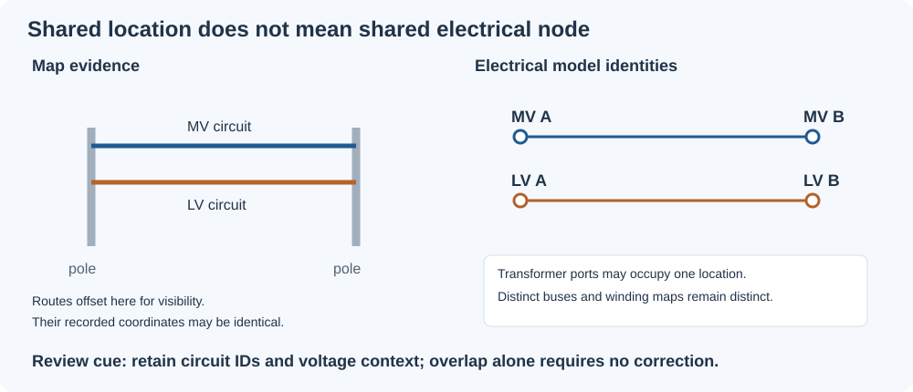
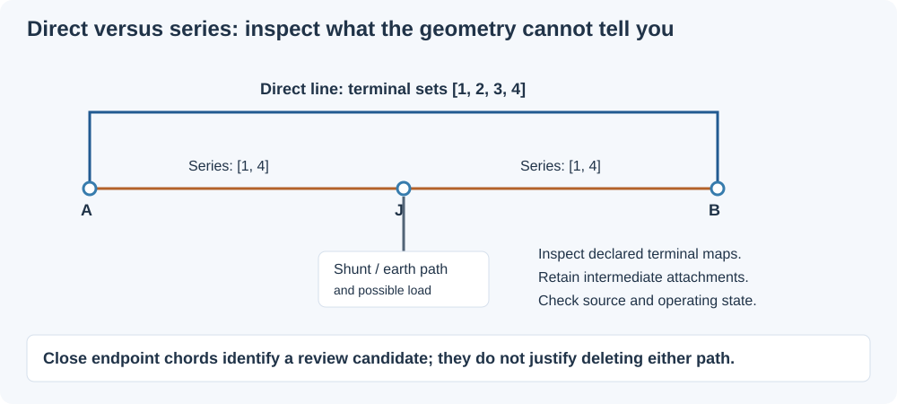
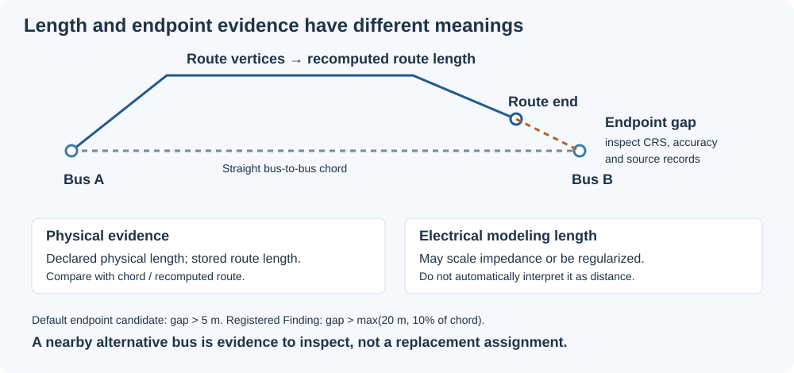
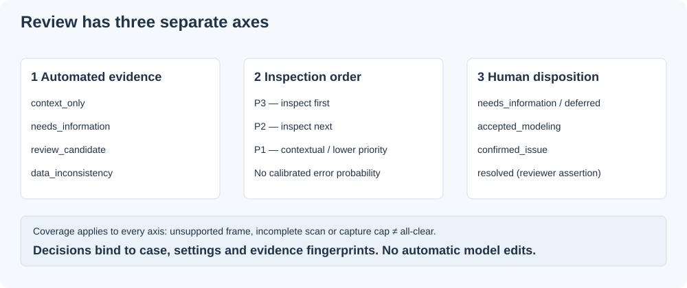

Spatial diagnostics and cleanup review
Use spatial evidence to decide what to inspect and which source records to consult while cleaning an electrical model. The analysis does not merge buses, rewire circuits, delete parallel branches or certify a repair.
using BMOPFTools
report = analyze("NetworkModel.bmopf.json")
render(report, "report.md") # spatial section is included automatically
spatial = get(report.results[:connectivity], "spatial", nothing)
if spatial !== nothing && haskey(spatial, "cleanup_review")
review = spatial["cleanup_review"]
paths = export_spatial_review(review, "cleanup"; item_limit=100)
endThe Markdown report starts with a coordinate-coverage banner: eligible and excluded bus counts, the resolved frame and reported-accuracy coverage. Queue completeness never implies complete geometry coverage. A linked candidate index lists the attention items shown below it; both respect item_limit, with explicit shown/total counts. Full IDs remain in each detail entry and JSON; row numbers are navigation aids and can change after regeneration. Context-only items stay in their separate inventory rather than entering the attention index.
The standalone bundle contains Markdown, the complete captured JSON queue, WGS84 evidence points in GeoJSON, and a decision-ledger template. The display limit applies independently to attention, context and reviewed sections; it does not enlarge the analysis capture budget. Existing reports are replaced and an existing decision template is preserved. Save actual decisions in a separate ledger. For an IO stream, use render_spatial_review(review, io; item_limit=100). See the public API reference.
Read the evidence before choosing a disposition
Shared locations can be intentional

MV and LV often share poles. Same-voltage parallel circuits may also share a route. These observations alone do not imply duplication. The report retains distinct bus/line identities and voltage labels; it does not infer that poles are shared. A transformer can have several ports at one physical location. An open switch can separate buses with identical coordinates. Neither requires a spatial repair. Independent length or endpoint contradictions still warrant inspection.
A nearby series path is not a redundant circuit

The direct/series detector compares bus chords and declared incidence. To decide whether a candidate is a duplicate representation, inspect conductor maps, intermediate attachments, circuit identifiers, operating state and source records. A grounding shunt or load at J can make removal consequential even when the endpoint geometry looks identical. The diagram is illustrative, not a reduction rule.
Each direct/series item now includes interpretation_evidence:
- Direct and series line maps oriented along the candidate path, plus comparisons of declared terminal sets at the same bus. Equal sets do not compose conductor paths or prove electrical equivalence; malformed/missing maps are indeterminate.
- Intermediate load, shunt, capacitor, source, generator, solar and storage references, with terminal maps, and explicit bus
perfectly_grounded_terminals. Shunts may model grounding, but the report does not assign a grounding role from their names. - Each line's declared, physical, chord and route lengths, with its comparison basis.
- Literal source declarations with metadata paths. The supported scalar keys are
origin,evidence_status,claim,attachment_mode,method,source_refandplaceholder, read directly undermetaor one dictionary level below it. Historical nested models are not searched. Missing fields mean unavailable provenance, not observed construction. Claims such asinferred_not_observedor “placeholder” remain statements made by the producer, not verified facts.
This enrichment does not alter candidate identities, classifications or priorities. It is included in evidence fingerprints, so earlier decisions on enriched items require renewed review rather than silently applying to changed evidence.
Keep the different lengths separate

An endpoint gap can arise from bus placement, stale route geometry or an incorrect bus reference. Check CRS, reported accuracy and source provenance before deciding which declaration to change. The default candidate tolerance is 5 m; the registered route-endpoint Finding uses max(20 m, 10% of chord). Reported coordinate accuracy does not silently change either threshold. A nearby alternative bus is an inspection lead, never an automatically selected replacement.
Physical length, stored route length, recomputed route length and electrical modelling length may have different meanings. In particular, regularized electrical length is not automatically evidence of physical distance. The length section below specifies which value participates in each comparison.
Separate observation, assessment and human decision

W.GEO.* codes are registered Findings, documented in the GEO reference. S.* codes label spatial candidates and R.LINE_LENGTH_CONTEXT labels reviewable length context; these are not additional Finding codes. An automated data_inconsistency can identify conflicting declarations without determining which source is wrong. Only a reviewer records confirmed_issue.
Priorities run from P3 (inspect first) to P1; they are not probabilities. Category counts count observations, not unique defects. Check applicability, eligible coordinate coverage and scan/capture limits before interpreting a small or empty queue. Unsupported evidence and disabled checks are never an all-clear.
Activation and coordinate semantics
Geospatial analysis is enabled by default within the connectivity pass. With normal settings, results[:connectivity]["spatial"] appears when at least one bus has longitude, latitude, x, or y. Coordinate fields trigger inspection; valid coordinates and supported frame declarations still determine which metrics are applicable. Cases without bus coordinate fields skip spatial analysis.
The JSON execution API accepts execute_analysis(net; spatial_enabled=false). The CLI accepts bin/bmopf analyze-case --input CASE.json --no-spatial, and the MCP bmopf_analyze tool accepts "spatial_enabled": false. These are Boolean opt-outs; the response records the effective value. See JSON execution.
To suppress the entire spatial pass while keeping the other analyses:
config = load_config()
config["spatial"]["enabled"] = false
report = analyze("NetworkModel.bmopf.json"; config=config)
render(report, "report.md")Alternatively, save the override in a TOML file and pass config=load_config("analysis-config.toml"):
[spatial]
enabled = falseThe same configuration works with connectivity_analysis. Suppression happens before coordinate inventory, route processing, proximity searches, topology candidates and cleanup capture. It produces no W.GEO.* Findings. JSON retains only an inapplicable / disabled spatial record with analysis_performed=false; Markdown explains that geographic checks were not run. This explicit disabled record is present even for a coordinate-free case. Other analysis and validation results are unaffected. A non-boolean enabled or non-object spatial section returns indeterminate / invalid_configuration, rather than silently enabling the pass. Omitted settings retain the enabled default.
The existing proximity_enabled, discrepancy_enabled and review_enabled settings control individual parts when the whole pass is enabled. The standalone cleanup bundle requires an available cleanup report and reports an error when the entire spatial pass is disabled.
When enabled and coordinates exist, the report includes coordinate and route coverage, line-length distributions by voltage tier, and bounded long-line witnesses. The long-line ranking compares each section with its own tier's 99th-percentile declared length; a high rank is an inspection cue, not an error threshold. Geographic line chord, route endpoint, and transformer separation measurements are computed only when network metadata declares WGS84 (crs, coordinate_system, or coordinate_reference_system) or a matching WGS84_geodesic_polyline route provides coordinate-frame evidence. The latter is explicitly labeled as route evidence and applies only to bus endpoints matched to a fully valid route; it does not establish the frame of other buses. n_metric_eligible_buses and distance_scope expose this coverage. Out-of-range and incomplete coordinate pairs are counted but excluded from geodesic calculations.
The coordinate loader copies OpenDSS x,y into fields named longitude,latitude without transforming or verifying them. Plausible numeric values therefore do not establish a geographic CRS. When the frame remains unspecified, spatial distances remain indeterminate; a declared unsupported CRS makes bus geodesic comparisons inapplicable. Line-length statistics remain available. The result makes no automatic asset-error claim when the CRS is unspecified. With a network-level WGS84 declaration, out-of-range bus coordinates and sufficiently large line chord or route-endpoint contradictions raise W.GEO.* Findings. For the chord Finding, line.meta.physical_length_m takes precedence over line.length. If electrical_length_regularized = true and no physical length is supplied, the physical chord check is indeterminate and emits no length Finding. Invalid explicit physical metadata also prevents fallback to declared length. Without these metadata fields the declared length remains the comparison basis. A line's equivalent electrical length can differ from its physical route, so these warnings call for source-data review rather than automatic repair. Route length_m and declared line length may come from the same upstream geometry calculation, so their agreement is an internal-consistency check, not independent confirmation of the physical route.
The spatial result groups fields as follows:
| Key | Contents |
|---|---|
coordinate_reference | status, declared CRS if any, caution text, matching WGS84 route count, and whether geodesic distances apply. Status is declared_wgs84, wgs84_route_evidence, declared_other, or unspecified. |
coordinate_coverage | Counts of complete longitude/latitude pairs, x/y fields, partial and invalid pairs, and pairs outside WGS84 numeric ranges. |
routes | Route and basis coverage, numbers of endpoint and length comparisons, mismatch counts, and bounded endpoint-gap witnesses. |
lines | Length quantiles by voltage tier, chord comparison count, shorter-than-chord count, and bounded absolute and tier-relative length witnesses. |
coincidence | Exact-coordinate groups, counts by direct branch context, and bounded bus/terminal/component witnesses. |
coordinate_semantics | Resolved frame, units, axis order, declarations, conflict reasons, provenance/accuracy coverage and bounded bus issue witnesses. |
proximity | Radius-neighbor counts, exact metric-location counts, single-linkage clusters, bounded evidence, and explicit search-budget/coverage status. |
length_context | Separate declared, physical, endpoint, stored-route and recomputed-route lengths; per-comparison status counts and bounded contextual witnesses. |
transformers | Maximum all-winding bus separation per transformer, quantiles, zero-extent counts, and bounded assessed/indeterminate witnesses. |
Exact coincidence is descriptive equality within a coordinate field family, including x/y buses when they have no longitude/latitude fields. It needs no metric CRS and does not snap almost-equal coordinates. Invalid pairs and points outside an explicitly declared WGS84 range are excluded. A group may carry multiple context tags: transformer_ports, line_connected, open_switch, closed_switch, or unknown_switch_state. no_direct_branch means no line, switch, or transformer directly relates two distinct members; it says nothing about paths through other buses. None of these tags proves intent, duplication, or a need to merge buses. No Finding is emitted solely for coincidence.
Witnesses retain bus voltage tiers and terminal names, plus declared component ports and terminal maps. Selection is deterministic and keeps examples for each context (five per context admission limit), with at most 20 member buses and 20 internal components per group. Exact totals and truncation flags accompany bounded lists. Many legitimate transformer ports therefore cannot hide all groups without direct branch context.
Transformer extent uses the maximum pairwise separation across all winding buses, including n_winding, rather than only distances from winding 1. Every winding must have eligible coordinates; missing or unsupported evidence yields an indeterminate witness instead of a partial extent. Zero extent is counted as descriptive context and is not an anomaly by itself.
length_context compares the physical length (or eligible declared-length fallback) against the endpoint distance, recomputes WGS84 route lengths from all vertices, compares stored versus recomputed route length, and separately compares declared versus physical length. Each comparison reports passed, failed, indeterminate, or inapplicable; these are data-consistency statuses, not scientific preservation or feasibility claims. Unknown bus frames and missing measurements are indeterminate; explicitly unsupported bus frames or route bases are inapplicable. A separately labelled WGS84 route can be measured internally without establishing the coordinate frame of its buses.
Each comparison uses max(5 m, 10% of reference distance); the endpoint test is one-sided and the other comparisons are symmetric. Witnesses preserve the basis, threshold, regularization flag, source references, and whether declared length scales impedance. Invalid route vertices or lengths never enter a calculation. Five examples per context admission limit keep output bounded while retaining exact counts. No new Finding codes are emitted by these contextual comparisons. The older lines and routes counters still compare declared lengths; they are descriptive and may differ from the physically qualified Finding count. For example, splitting a line may leave parent-level physical_length_m on each child section. The declared/physical comparison exposes that discrepancy without identifying which value should change or inferring a transformation mapping from shared source IDs. test/data/spatial_split_lengths.json is a package-owned synthetic witness of this metadata pattern.
Coordinate declarations are resolved across the root and meta fields coordinate_reference_system, crs, and coordinate_system. Equivalent WGS84 aliases agree; conflicting or malformed declarations yield ambiguous and suppress metric comparisons. Named longitude/latitude fields always mean those axes. A conflicting coordinate_axis_order is reported, never used to silently swap values. WGS84 defaults to degrees; a conflicting explicit coordinate_units suppresses its metric interpretation.
Local Cartesian frames must be declared explicitly, for example:
{"meta": {"coordinate_reference_system": {
"type": "cartesian", "name": "site_grid", "units": "m",
"axis_order": ["x", "y"]
}}}These frames use named bus x/y fields, with m, km, or international ft units (scales 1, 1000, and 0.3048 metres). Axis/unit declarations may also use coordinate_axis_order/coordinate_units on the root or in meta; multiple declarations must agree. A Cartesian frame without units is indeterminate. Projected EPSG codes are unsupported; no projection or map-scale assumption is inferred. Cartesian distances feed the descriptive length and transformer extent reports; existing W.GEO.* Findings retain their WGS84 domain.
Bus-level CRS, axis, or unit declarations must agree with the network frame (or the WGS84 route evidence supporting that bus); they cannot silently define a transformation. Conflicting buses are excluded from metric and exact-group comparisons. Network-level ambiguity also suppresses exact groups, rather than combining positions from unresolved frames. Unknown undeclared frames still permit descriptive raw coordinate equality without a metric interpretation.
coordinate_provenance (a string) and coordinate_accuracy_m (a finite nonnegative number) may appear on a bus or its meta, with network-level defaults in the same locations. Conflicting declarations within one scope are reported; explicit bus values override network defaults. schematic and displaced coordinates are excluded from metric checks. Other provenance labels are retained without upgrading them to surveyed evidence. Invalid accuracy is reported as unknown while a valid coordinate remains usable. Accuracy values describe reported data quality; they do not certify error bounds or independent measurement.
Proximity inventory runs on metric-eligible coordinates only. Configure it through load_config and pass config=... to analyze or connectivity_analysis:
[spatial]
proximity_enabled = true
proximity_radius_m = 1.0
max_candidate_pairs = 1000000
witness_limit = 20The radius must be finite and positive; the candidate and witness limits must be positive integers. Invalid settings return indeterminate with invalid_configuration; disabling the pass returns inapplicable. The default one-metre radius is a review setting, not a survey-accuracy or electrical-rule threshold. Coordinate accuracy never expands it implicitly.
A spatial hash indexes unique locations, avoiding all-pairs searches for sparse networks. Cartesian points are indexed in metres; WGS84 points are indexed on the sphere in three dimensions and then filtered by the same spherical geodesic used elsewhere in this report. This handles the antimeridian and poles without assuming a local projection. Equivalent positions at ±180° and the poles are canonicalized for metric-location counting. Raw exact-coordinate groups remain a separate observation.
n_near_bus_pairs counts unordered bus pairs at different metric locations whose separation is at most the radius. Repeated locations are indexed once and pair counts use their multiplicity; n_zero_distance_bus_pairs reports coincident metric positions separately. Clusters use single linkage: A near B and B near C may form one cluster even when A is farther than the radius from C. They do not imply a common electrical node or a cluster diameter below the radius. Pair witnesses identify representative bus pairs and their voltage tiers, coordinate provenance, reported accuracy sum, and location multiplicity. Accuracy labels apply to the named representatives only, and are descriptive, not certified uncertainty bounds.
max_candidate_pairs caps work on dense unique locations. If exhausted, or if coordinates/radius exceed the index's numerical range, the result is indeterminate, counts_complete is false, and final pair/cluster totals are JSON null. n_near_bus_pairs_observed is a lower bound; observed components are partial and may later merge, so their count is not a lower bound on final cluster count. Cluster witnesses explicitly mark completeness. The witness limit bounds pair examples, cluster examples, and members per cluster. No coordinates or network connections are changed, and proximity alone emits no Finding.
Endpoint gaps are counted with a 5 m descriptive threshold; the route-endpoint Finding threshold is max(20 m, 10% of endpoint chord). Route/declaration length differences use max(5 m, 10% of declared length); the line/chord lower-bound check uses max(5 m, 10% of chord). A mismatch count is JSON null when no eligible comparison was made, rather than zero. Geographic Findings require an explicit WGS84 declaration; matching route evidence alone supports measurements but does not assert the CRS of every bus.
Geometry and topology review candidates
discrepancy_candidates.checks adds descriptive review categories to the spatial report. These S.* candidate codes are stable package-local categories, not Finding codes, electrical-equivalence claims or repair instructions. They add no PSK preservation claim. JSON retains terminal maps, voltage tiers, coordinate provenance, switch states and branch references; Markdown summarizes bounded witnesses. The synthetic test/data/spatial_discrepancies.json demonstrates a direct line alongside a series path, shared geometry, a repeated explicit source interval and a route ending near a different bus.
| Check | Candidate code | Supported evidence |
|---|---|---|
nearby_topology | S.NEARBY_WITHOUT_DIRECT_BRANCH | Metric-eligible bus pairs within the proximity radius, including exact co-location, with no direct line, switch or supported transformer declaration. |
series_paths | S.DIRECT_ALONGSIDE_SERIES_PATH | A direct line and a line-only path with degree-two interior buses; path chord sum is within max(route_endpoint_tolerance_m, 10% of endpoint distance) of the direct chord. |
branch_spans | S.LONG_BRANCH_SPAN | A line, switch or all-winding transformer span exceeds the configured absolute review distance. |
route_endpoints | S.ROUTE_ENDPOINT_DISAGREEMENT | A valid WGS84 route disagrees with its eligible WGS84 bus coordinates under the better of forward/reversed endpoint assignments. Nearby alternative buses are listed without assigning them. |
route_overlaps | S.SHARED_ROUTE_SEGMENT | Two or more lines contain exactly the same nonzero WGS84 vertex-to-vertex segment, allowing reversal. |
source_intervals | S.REPEATED_SOURCE_INTERVAL | An explicit nonempty string ID repeats within meta.source_interval or within meta.backbone_extension.source_interval. The two namespaces are kept separate. |
route_defects | S.INVALID_ROUTE_GEOMETRY, S.ROUTE_SEGMENT_DEFECT | Malformed route data, zero or repeated undirected WGS84 segments, or individual segments above the configured long-span threshold. |
The bus graph is descriptive: lines and all ports of supported transformers join bus components regardless of galvanic isolation or terminal mappings. Closed switches join the certain graph; switches with missing/non-Boolean state join only the possible graph. Known open switches join neither graph but remain visible as direct declarations and incident branches. Nearby pairs distinguish same components, separate components, and uncertain separation due to unknown switch state or invalid branch declarations. This is not conductor reachability, energization or evidence that buses should be merged. endpoint_like means at least one bus has at most one incident branch declaration, including open switches.
Series-path searches stop at a branch, switch or transformer port in the interior, and never establish a valid series reduction: an interior bus can carry loads or other attachments, which are reported. The geometry test uses bus chords; it does not assert route coincidence. Shared-segment and repeated-source groups retain line identities, feeder labels, bus pairs and orientation-aligned terminal maps; separate circuits can legitimately share these attributes. Groups additionally label the declared endpoint arrangement as a series chain, parallel bus pair, branched or cyclic graph, or disconnected graph. These labels do not infer electrical equivalence. Nearby-pair component and voltage-tier counts carry an _observed suffix and cover the whole scanned subset, independently of witness limits. Generic raw_key parent IDs are not interpreted as source intervals. Routes with different segmentation, partial collinear overlaps, geometric crossings, self-intersections without a repeated segment, arbitrary alternate paths and inferred source-to-target mappings remain unassessed.
[spatial]
discrepancy_enabled = true
max_topology_pairs = 100000
max_series_hops = 8
route_endpoint_tolerance_m = 5.0
long_span_threshold_m = 10000.0The proximity radius, location-pair budget and witness_limit from the previous section also apply. max_topology_pairs independently caps nearby bus-pair expansion, series path steps, branch-span distance pairs, route-segment processing and route-endpoint bus queries. It is a positive integer. max_series_hops is an integer from 2 through 64. Both distance settings must be finite and positive. The 10 km long-span default is an absolute review setting, not a voltage-specific engineering limit or statistical outlier test. All counts are within each check's stated domain; explicit coverage fields report excluded or unsupported evidence. A scan with no eligible geometry is not a zero-candidate success. Disabled passes are inapplicable; invalid settings and truncated scans are indeterminate. Incomplete scans retain n_candidates_observed as a lower bound and leave n_candidates null. Witness truncation alone does not invalidate aggregate counts.
WGS84 route-shape evidence is independent of the bus coordinate frame. Unknown or conflicting bus frames suppress endpoint distances and alternative-bus searches, but an explicitly WGS84 route can still contribute shared-segment or route-defect evidence. All algorithms are read-only and make no snapping, rewiring, merging or circuit-deletion decisions.
Cleanup review workflow
results[:connectivity]["spatial"]["cleanup_review"] is a review queue over the spatial candidate categories and earlier line-length context. A line with only regularized_electrical_length context is not queued. Coordinate coverage, exact-coincidence inventories and transformer extents remain separate context; this queue is not a complete inventory of all model defects.
[spatial]
review_enabled = true
max_review_candidates = 5000The cap is a positive integer up to 100000. Each check independently captures up to that many candidates, regardless of witness_limit; the combined ranked queue is capped again. coverage reports observed/captured counts, scan status and capture completeness by check. Each check's domain_counts retain exclusions such as unavailable branch distances; coordinate_context states the frame and metric bus coverage, and analysis_settings records the spatial configuration. Completeness refers to candidates in the declared domain, not to every bus or branch having usable geometry. queue_complete=false means that scans, capture, or the final queue are incomplete. Disabled discrepancy scans also prevent a complete queue. Unsupported/inapplicable domains are disclosed, never upgraded into validated cases. The queue is ordered within the captured subset; a cap can hide later candidates of higher priority. Increase the budget and regenerate before treating the queue as exhaustive within its stated scope.
Each item has a stable logical item_id, its evidence fingerprint, typed bus and component references, geometry basis, direct-subject impact counts, and a recorded or unreviewed disposition. IDs distinguish shared segments and transformer types; a moved segment may have a new identity. Direct/series candidate IDs preserve the direct branch role and ordered series path, independent of traversal direction. Separate candidates on the same cycle therefore have distinct IDs. Regenerate older queues with duplicate IDs before replay; old direct/series IDs remain unmatched rather than being assigned to a new candidate. Records bind to canonical SHA-256 fingerprints of the entire network snapshot, spatial configuration, workflow and ranking-policy versions, and item evidence. Only ingestion bookkeeping timestamps _meta.parsed_at and meta.provenance.parsed_at are excluded from the case hash; other provenance remains binding. Object key order and equivalent integral JSON number spellings do not affect fingerprints. Even an unrelated network edit invalidates old decisions conservatively; these hashes are not the raw input file hash.
Location groups use the first sorted evidence point in a supported frame, with exact equality only. Unlocated items group by a typed primary asset. Grouping organizes inspection; it does not establish physical co-location of all members or authorize merging buses. There is no spatial snapping or transitive clustering. Group summaries deduplicate identified buses/components and retain evidence classes. Their ordering uses maximum item priority, maximum item direct-load count (not a sum), unique component count, then location ID; it does not inflate priority from multiple diagnostics derived from the same geometry.
Evidence categories and shared infrastructure
Each item has an assessment with a category, observation, interpretation, uncertainty, suggested source inspection, and voltage context where available. Categories describe evidence, independently of inspection priority and reviewer disposition:
| Category | Interpretation |
|---|---|
context_only | An observation without sufficient conflicting evidence to warrant correction. |
needs_information | Missing voltage or topology evidence prevents interpretation. |
review_candidate | Additional declaration evidence warrants inspection; legitimate arrangements remain possible. |
data_inconsistency | Malformed data or conflicting supported declarations; the responsible field and electrical consequences remain unresolved. |
No automated category means confirmed issue. That remains an explicit reviewer disposition. category_counts count captured observations, not defects; presentation_counts distinguish attention, context and reviewed items. Context alone is excluded from the attention view. Reviewer dispositions confirmed_issue, needs_information and deferred put an item in that view even when its automated evidence is contextual; accepted_modeling and resolved move it to the reviewed view without deleting it. Category counts remain unchanged by decisions. Location groups also retain category counts.
Shared-route and source-interval groups carry each captured line's endpoint voltage labels and an aggregate voltage_context evaluated over all members, including members omitted by the witness cap. Labels come from the existing source-propagated voltage analysis, never from coordinates. Different known voltage systems with matching labels at both ends of each line are compatible with shared infrastructure. This does not verify shared poles, independent circuits or correctness of voltage propagation. Matching voltage labels and parallel bus pairs also do not turn overlap alone into a duplicate-asset claim. Unknown labels remain needs_information unless an independent series-chain or different-terminal-map explanation supplies representation context. A line whose endpoint labels differ remains a separate review candidate, even in a mixed-tier group. Independent endpoint and length discrepancies are never suppressed by a contextual overlap classification.
Inspection priority uses spatial-review-priority/v2:
- P3: malformed geometry/length declarations, a length below its applicable endpoint bound, or route endpoints disagreeing with connected bus coordinates.
- P2: direct/series declarations, nearby separate same-tier components, missing voltage/topology information, non-regularized length discrepancies, grouped lines crossing voltage labels, unexplained repeated source identities, and degenerate or retraced route segments.
- P1: contextual proximity or shared infrastructure, legitimate parallel-route possibilities, series segmentation, distinct terminal maps, regularization interpretation, and absolute long-span thresholds.
Within a priority, directly attached load count and identified component count order inspection, followed by item ID. Counts cover directly referenced subjects, can be lower bounds when member lists are truncated, and never estimate downstream load, electrical severity, independent evidence strength or error probability. assessment.error_probability is null; no probability has been calibrated. The policy version is bound into the analysis fingerprint, and assessments and coordinate evidence into item fingerprints. Decisions from older classification policies do not silently apply to newly classified reports. Existing v1 report payloads remain readable, but regeneration is required for the new classifications.
Synthetic expectations are executable in test/data/spatial_review_calibration.json and test/data/spatial_shared_infrastructure.json with its companion tests; supplied SAPN and Springfield cases provide structural calibration only. No field precision/recall is claimed.
Sidecar dispositions
Use the existing analyze report, and keep decisions outside the electrical model:
report = analyze(net)
review = report.results[:connectivity]["spatial"]["cleanup_review"]
item = first(review["items"]) # select the item you actually reviewed
record = spatial_review_decision(review, item["item_id"];
disposition="needs_information", reviewer="reviewer-id",
recorded_at="2026-10-24T01:00:00Z",
rationale="Check the source survey and terminal mapping.",
evidence_refs=["survey:example-record"])
# Append record to your saved ledger; replay the entire ledger on a fresh queue.
reviewed = apply_spatial_review(review, [record])
report.results[:connectivity]["spatial"]["cleanup_review"] = reviewed # for report rendering
geojson = spatial_review_geojson(reviewed)Dispositions are unreviewed, needs_information, confirmed_issue, accepted_modeling, deferred and resolved. Every record requires a nonempty reviewer and rationale, an explicit UTC timestamp at second precision, exact fingerprints and a list of evidence references (which may be empty). References are preserved as text, never fetched or executed. resolved is a reviewer assertion, not a verified repair; the candidate remains visible.
apply_spatial_review returns a copy, applies the latest UTC timestamp per item, and preserves the entire ledger in decision_audit. Identical duplicate records are harmless. Contradictory simultaneous records, malformed records targeting an item, edited item evidence, or stale fingerprint bindings leave the item unreviewed with an explicit status. Older records are retained. Records for absent items are unmatched; absence can reflect capture limits or changed identity and never implies resolution. Replaying an empty ledger resets dispositions rather than inheriting an earlier application. No candidate, model component or Finding is deleted or suppressed, and no network changes are proposed or applied by these functions.
Map and report bundle
spatial_review_geojson returns a GeoJSON FeatureCollection containing WGS84 MultiPoint evidence, with item IDs, bus/component references, priorities, impact counts, dispositions and fingerprint provenance. geometry_coverage reports how many identified buses have eligible locations and whether the subject list is complete; a mapped item can still have partial bus-coordinate coverage. It never invents routed lines from bus chords or draws a line through the antimeridian. Explicit WGS84 route vertices/endpoints can be mapped even if bus frames are unknown. Local Cartesian geometry is kept in each item's local_geometry, with its frame and metre units, and omitted from GeoJSON along with unknown coordinates; the omission count is explicit. GeoJSON alone is not the complete review queue.
Markdown export is available through render(report, "report.md"). The cleanup section presents separate category and disposition counts, coverage limitations, and up to 20 attention items grouped by exact review location. Each entry gives subjects, measurements where applicable, voltage context, interpretation, uncertainty, source inspection guidance, coordinate provenance/accuracy and stable IDs. Contextual observations and accepted/resolved items have separate expandable inventories, each with its own 20-item display cap and explicit shown/total counts. These display caps do not change the captured JSON queue. A group is an inspection anchor, not proof that every subject occupies that point. Underlying proximity and geometry/topology witnesses are expandable too. Raw Markdown readers still see the retained inventories.
The public export_spatial_review(review, outdir; item_limit=20) API writes review.json, review.geojson, review.md and an empty decisions-template.json (preserving an existing template). The runnable example calls that API after analysis and optional decision replay:
julia --project=. examples/spatial_cleanup_review.jl CASE.json OUTDIR
julia --project=. examples/spatial_cleanup_review.jl CASE.json OUTDIR DECISIONS.jsonThe sidecar envelope is {"schema_version":"spatial-cleanup-review/v1", "decisions":[...]}. Keep the full records returned by spatial_review_decision, then append later decisions rather than editing history. Report bundles can be regenerated; save the ledger separately. The JSON execution interface continues using the existing analyze_case adapter, which carries the unreviewed queue. Disposition replay and GeoJSON export are Julia APIs and do not introduce a new transport operation or scientific contract.